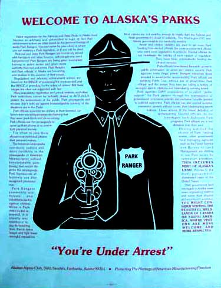

Park Service Corruption .com
The Corrupted United States National Park Service
Doug Buchanan
1957 Weston
Fairbanks, Alaska 99709
phone: 907 479 2149
Doug at DougBuchanan.com
The pitiable United States National Park Service rangers, their superiors and minions, are a uniquely malicious and petty lot, and therefore a laughable lot offering a superlative learning vehicle illuminating how and why the human mind is damaged by the acquisition of any institutional power.
Lacking a real enemy, but given guns, and intensely programmed to believe that they are protecting the most sacred cow in the universe, the word, "environment", from those destructive humans, the Park Service chaps, clueless of what they are, sincerely believe that humans are the enemy, and then act on that belief, orchestrating the most ludicrous attacks on the most inconsequential and non-harmful actions of rational humans. Few examples more magnificently display the Nazi-styled Police State mentality of modern American government personnel. Even President George Bush's new US Homeland Security Gestapo has not yet achieved the National Park Service operation standards, much to the amusement of observers.
These things are not because those bare conclusions were printed. They are because the observations and questions verify them.
As Buddha said, with similar words, Do not believe anything you read or hear, no matter who says or writes it, not even if I say it, unless it conforms to your own reasoning. Therefore, you were given a human brain of equal ability to all other human brains, despite the belief of Park Service idiots who are trained to sincerely believe they are superior to their human enemy.
Use the reasoning process of your brain. Ask the extent of questions that easily illuminate the lies of Park Service dolts and their ilk of power-damaged government minds.
The photo is of a poster the Alaskan Alpine Club made back in the 1980's.
This website will offer examples and analysis of how petty power corrupts, that is, alters and damages the process of the minds of the pitiable chaps who have fallen victim to US National Park Service employment.
The phenomenon would verifiably occur if I, you, or any other human, were a Park Service employee.
The uniquely powerful US National Park Service offers one of the finest learning vehicles for how and why petty power alters / damages the perceptions of those otherwise common humans who adopt power of title or office as their mind's controlling mechanism. Notice in those words that there is no distinction among the full range of Park Service personnel, from the summer volunteer to the Director, for reason.
Bring forward any human holding even a micron of institutional power, who suggests that they are not corrupted by power, or any other persons who say they would not be corrupted by power, and I will ask the questions to categorically prove their error and embarrassing paucity of thinking.
If that is so, as readily verifiable to your mind upon asking the controlling questions, what decisions will you make as a result of any communication or interaction with such a power-damaged mind, including your own if you are already a victim of your own mind's perceptions being altered by a process that has observably produced all the social damages to humans, great and small? If the perceptions of those people are altered in relation to the common human mind holding no power, and because they wield the results of power above reasoning, would it not be of your greatest interest to know how their minds are synthesizing or dealing with otherwise understandable information creating otherwise rational conclusions?
If you can answer those questions with even reasonably close suggestions for which you would openly attach your name for others to consider, you are already learning more than a power-damaged mind will learn. Power cannot allow its victim mind to approach the knowledge of the controlling contradiction of power.
Among other amusing experiences, I was once arrested and jailed for a week, by my dear and benevolent friends in the National Park Service. I laughed at the time, and many times since, robustly, including while writing these words, much to the rage of the power-damaged minds of US National Park Service sorts.
For a controlling reason that is inherently unrecognized by the National Park Service chaps, each year Park Service rangers issue hundreds of thousands of fraudulent citations, threatening and variously fining or jailing relatively young, educated middle class people, for actions that those people recognize as having damaged no persons or property. The minds of the common people recognize the contradiction. No prevailing laws were violated. The process is elsewhere revealed as a lucrative taxation by fraudulent citation scam, using color of law and power of office, but that is only a superficial indicator of what sustains and escalates the scam. The power-damaged minds of the Park Service thugs do not recognize the contradiction, and more amusingly, do not recognize the inherent results among humans. How long can how many human minds be fooled, at damage to them, before the inherent consequences are manifested? Why would a rational mind initiate a fundamentally flawed process that will destroy all that it creates, and more?
From their mutual and self training, in jailing me, the Park Service chaps and their equally pitiable court judges whom park rangers often reference, in careless conversation, as their pocket court judges, and their equally malicious prosecutors, used their traditional government intimidation tactics to fool their midget minds into believing that they impressed me and others with the illusion that government sorts are superior to me and other common people, and can trammel our rights at whim, with impunity.

Among their many errors was their failure to understand the diversity of humans. In regard to their arresting and jailing me, the amusing little Park Pigs and their pocket court thugs genuinely believed they were intimidating a person who was, by chance, a previous US Army airborne ranger infantry officer, Vietnam veteran. I laughed. The ludicrous government dolts who sent me to be shot at in a jungle, sincerely think that I would be intimidated by a pleasant vacation in a comfortable jail among people far more honorable and intelligent than the dolts who put them there.
The image is of a poster made by the Alaskan Alpine Club back in the 1980's.
Fools fear jail, and are thus easily maintained as fools, by government idiots routinely mouthing the threat of jail. If they fear jail, only a few questions can categorically prove that all those self-flattering American military fools who ran off to battlefields, and claim the word, courage, are in fact abject cowards who can be easily made to perform the most ludicrous actions contradicting common sense and their every claim, by a rhetorical threat of jail from mental midgets with petty government jobs. Power-based governments can only exist by keeping fools fearing illusions, much to the howling laughter of observers.
And therefore what did you learn from the above words, about the nature of power within the human mind? Read again the paragraph about my having been an Army sort, to practice recognizing what less-thinking people do not identify, so you may advance your knowledge. When I was that US Army thug, I and my equally pitiable Army colleagues genuinely believed that we were intimidating those inferior little commie slant-eyed gooks in the jungle, the guys who easily won the war and ran the Americans back out of their country. No human mind escapes the damage of power. Never accept power. Leave it to fools. Instead, utilize and educate your mind's reasoning ability. We American Army dolts thought we were tough guys. The Army still lies to its gullible recruits, about that illusion. It took the Vietnamese a thousand years to run the Chinese out of Vietnam, only forty years to kick the pitiable French out, and a mere ten years to shred the laughable Americans. The American military sorts are push-overs, because they remain as ignorant as Park Service thugs. They are dependent upon massive, artificial wealth, inherently vulnerable paper money printed by the ton, and effective illusions to prop up its perceived value, which is inherently temporary, to make more bullets, guns, tanks, bombs and bombers, than the other guy can produce. Americans are thus vulnerable to the human mind's thinking process, as Osama proved, as will inherently become more utilized by the increasing number of non-wealthy enemies the Americans created with their bullets and bombs. All human actions create their consequences. No human escapes the balance in all things.
All empires destroy themselves by their inherent corruption of power, and the National Park Service is a classic case for analysis.
The US National Park Service swine are verifiably everything that will be stated and supported on this website, as it is developed, with reasoning that will be presented for your every question. They are criminally lawless, malicious mental midgets, not because I say so, but because the evidence of their actions, and the flawless reasoning, will consistently prove the fact against every question any human can present. Was I not more so when I was a US government minion invading another people's nation, waging war on them because they would not grovel and kowtow to the mental midget DemocanRepublicrats in Washington DC? Well? The Park Pigs only jailed me. We bombed and shot the Vietnamese because they would not grovel as the Park Pigs demanded of me.
And what would you prefer to learn from these words, rather than from foolishly falling victim to employment in the US National Park Service, US Army, or any other US government job? What is the value of your mind, in relation to the value of material gain you were socially trained to crave? Each time you see a question mark, answer the question, write your answer, and you will efficiently become exponentially more intelligent than all the wealthy, powerful and highly titled people in the world, including university professors, think tank sorts and their ilk, because you will soon learn that they do not answer questions, for lack of ability.
There is no such thing as power that does not corrupt, that is, alter / damage the perceptions of the human mind. The least power corrupts as much as the most power. It verifiably alters controlling categories of neural routings of data in the brain, with precisely predictable results, leaving the mind so incapable of plain old down on the farm common sense and human reasoning, that it will maliciously violate logic and every law, to advance the illusion of its superiority above other humans, much to the amusement of humans who have not so damaged their mind. Learn how to be among the latter.
Oh, why was I arrested and jailed? Because I asked certain questions on certified written record that prove the ongoing criminal operations of most National Park superintendents and their minions, of profound magnitude. I will later post the full story, also found among the related websites at the bottom of this page. The stories of other people the Park Service viciously attacked to advance the raw power of mental midget Park Service thugs, will also be posted. The story of Andrew Bielecki is another classic, among countless.
Which more questions will people ask of mental midget Park Service idiots, now that those idiots have revealed their vulnerability to questions, by jailing people who learn how to ask effective questions? Why did the Vietnamese, Afghans, Iraqis and others, not kowtow to Americans when Americans attacked them? The Park Service chaps and the Americans cannot accurately answer those questions, as their actions prove, and thus are vulnerable to the inherent results. All human actions hold their consequences. Go ahead, use color of law and power of office to jail, fine or harass another person who damaged no person or property, and ask yourself if that person and his colleagues therefore respect you, and will never get even, in spades. What is your answer to your question? The intellectually absent Park Service pigs will not ask or answer the question, and will thus remain as ignorant and malicious, as this website will categorically prove as it develops.
You will not understand the full substance of the following sentence. Power fears questions more than death itself, because questions create knowledge by the process of the human mind. And knowledge is the death of power. Power will readily kill or otherwise attack people before it willingly surrenders any portion of itself in the mind it infects, by design, least power could not exist as a functioning concept within a reasoning device, the human mind. Power is a verifiable, quantifiable, qualifiable and locatable process within the human mind.
Oh, and I was raised on a farm, and have a degree in wildlife biology, and therefore I know the difference between pigs and National Park Service thugs. Therefore I apologize for slighting the good character of farmyard swine by equating them to National Park Service drones. Hmmmm, and I therefore owe an apology to male honey bees. Certain that they have accepted the apology, and that they laugh as much as myself, I will continue to present that contradiction in reference words, to indicate my amusement with these fine chaps who are as self-fooled as was I while more intelligent people rightfully referenced me as a US Army pig, swine, drone, dolt, etcetera. They were correct, much to my belated amusement. If you have not yet learned to laugh at your typical human screw-ups, all of them, and then correct them, you are a prime candidate for a government job.
If you are a Park Service employee, anyone from a summer volunteer to the National Park Service Director or his political hack superiors, do your mind the favor of its lifetime. Quit your job, today. Your superiors are lying to you, just as did I when I parroted the lies of my superiors to my subordinates in the Army. And you have not yet learned how to ask the questions to expose those lies, or you would have already quit your job, unless you openly admit that you are a fundamentally dishonest human. There is no wealth or power in the world worth more than the functionality of your mind. Do not even ask for your departing paycheck. Let them keep it, so that you can learn what they can never know from that action.
While you remain within an institution which cannot tolerate the questions that identify and resolve its contradictions, your otherwise priceless mind is being trained to be stupid, unable to identify or resolve contradictions (lies, mistakes, problems, etceteras). Your mind is worth more to you than all the illusions of wealth, power, ego, prestige and status in the world, and certainly more than a routinely ridiculed government job, as you may painfully discover too late if you continue doing as you are told by your superior government drones, rather than ruthlessly question them.
Below are typical, easy questions, among many others, that the intellectually absent National Park Service drones are literally not capable of answering, while any common person can answer them, sign their name to the answers, and distribute those answers for anyone to judge their intellectual ability.
If you are not able to answer these questions, sign your name to the answers, and openly distribute them to the public, quit your job, because you have been rendered as less intelligent than a grade school kid who can easily answer these common-sense questions. You desperately need to learn how to ask and answer questions, or you will become progressively less intelligent, while people in other nations advance their knowledge beyond the intellectually self-stagnated Americans who mindlessly believe rather than question the Washington DC RepublicratDemocans and their Park Service minions.
Are National Parks public land?
Is the public land owned by the public, or by government managers such as Park Superintendents?
Is he who is only the manager of the land, the owner of the land?
Do words hold their meaning?
Is it a RIGHT of the public to walk on open public land that is not fenced or walled for verifiable security purposes?
Is the definition of a right, in law, as immediately recognizable, as well as formally stated by the US Supreme Court, that for which no permission, permit, license, tax or fee can be lawfully demanded?
Is that which is grantable, therefore inherently deniable?
If permission (a permit) is grantable for the exercise of a right, is a right therefore deniable?
Can a right be deniable, and still be defined as a right?
If two laws contradict each other, for the rule of written law to prevail above the rule of personalities (kings or childish bullies with Park Service guns), must not one law prevail above the other, as found in written law?
Do not rights identify the highest laws?
Is the United States of American ruled by written law, or by personalities with government jobs, who would thus be kings?
Do the many US National Park Service fees (taxation) and permits, demanded for the exercise of the right to walk on unfenced or unwalled public land within Park Service boundaries, constitute ongoing criminal operations by Park Service personnel violating the prevailing law of public rights?
Well? What percentage of Americans are so plain stupid that they cannot easily answer those questions which no Park Service employee can answer?
Americans are the most educated, and the stupidest people in human history, as is verifiable in line-item analysis. They have no clue as to the utility of words and language. They routinely use words for the expression of their opposite meanings, and do not understand the source of the contradictions and frustrations they thus create. They routinely talk about rights, yet cannot identify what rights are, or how to exercise them. Americans have taught their addled minds to sincerely believe that they must get government permits, and pay demanded fees for the exercise of rights, mutually exclusive concepts, by definition of the words, among a long list of other such contradictions.
The act of asking permission, whether known or unknown as such, by any mechanism, is the act described in the prevailing law and logic as that of willfully surrendering one's rights as a human, and also that of willfully acquiescing to the rule of personalities, kings with petty government jobs. It can be no other way if words hold their meaning, by definition. The American system of categorically corrupted government will promptly collapse when, among certain other events, a threshold level of Americans recognize the primary mechanisms utilized by government thugs to fool Americans out of their rights, and place Americans under the absolute rule of mental midget personalities. Copy this paragraph on paper. When you belatedly recognize the application of these words and the extent of those mechanisms, you will laugh yourself to tears, literally, at your previous, abject stupidity, and that of Americans.
Americans are so intellectually stagnated that they eagerly run off to wars where they can be killed, under the lie that they are defending freedom, and wave the flag at the same rhetorical stimuli that Hitler pandered to embolden Germans with the swastika, yet they fear even going to a comfortable jail in defense of their rights against the petty Park Service and other US government thugs whose power-based actions serve the sole proven purpose of destroying American rights described in the US Constitution. Enjoy the amusement of these humans. They are the best comedy on the rock.
The moment any US President starts another war, most Americans immediately believe the goal is peace, clueless of the functional and dictionary meanings of those words.
If language is to be of utility to advance humans, must not words hold their meanings when utilized to convey concepts? What is your written answer?
The human mind's process of reasoning is unknown to Americans, especially court judges who are routinely enraged by anyone suggesting that written law prevails above the raw power of judges, just as Park Service minions are enraged by any suggestion that citizens hold a RIGHT to walk on Park Service land.
It is not so much that the US government idiots, especially the court judges who cannot understand the meaning of words even if you hand them a dictionary, are idiots. They are humans just like everyone else, with a brain design identical to all humans. It is that their minds are so horribly damaged by petty power of office and titles that they will inherently continue to trammel the rights, steal money and property, imprison and kill fellow citizens, including their own offspring and each other's offspring, with increasing effect, until the power infecting their minds inherently destroys the American system of governance, on schedule, much to the amusement of people who simply learn the related knowledge by simply asking and answering simple questions.
That is the normal cycle of inherently self-defeating power. It will continue until humans emerge from the current intellectual dark ages. The advancement out of the intellectual dark ages can be promptly effected to collapse damaging power structures at any time, but there is no incentive to change such an entertaining game.
In the interval, those of you young victims of employment in the National Park Service, US military or other government agencies, foolishly believing the lies of your government superiors, parents, school teachers and other older adults, rather than ruthlessly questioning them, might more wisely wish to become more perceptive of your surroundings. You are not what you flatter yourself to be. I watched the TV news showing Vietnam veterans, including officers, who spit on their medals, and threw them onto the White House lawn during demonstrations against the Vietnam war, BEFORE I then finished ROTC and went to Vietnam. What process of the human mind caused my mind to not recognize that something was profoundly wrong (contradicted), even from such dramatically displayed data? Did you answer that question from the above data? What questions had I not yet learned how to ask, before I had to go learn that lesson by the same experience those folks endured? Well? Do you think you are as smart as I thought I was?
What questions are the mental midget National Park Service rangers, and their supporting colleagues, not asking of themselves and each other when they routinely issue citations to persons who obviously damaged no persons or property, and are therefore being punished for doing no verifiable wrong? What are the consequences of training one's mind to function so illogically, contradicting the process of reasoning? What is the value of their mind, in relation to the laughably few green American paper dollar bills they accept for making fools of themselves in front of thinking humans? Why are their minds not able to answer these and other common-sense questions?
You government and other institutional chaps are not what you flatter yourself to be, and you are making an open fool of yourself in front of commonly intelligent people who have asked and answered the questions you yet foolishly fear to ask yourself and others.
As an aside, I left my Army medals from Vietnam, the standard set of warm body and perfunctory career requisites, on an officers club table in Vietnam, after I drank the last beer while locals were stripping the building for materials for their homes. Fools display their military medals. Learn what military medals are, how they function within the government subculture, and how easily those cheap trinkets representing lies, fool fools. I may discuss that issue later. The Park Service and all government agencies have similar systems to fabricate illusions to fool fools into believing that their superiors are so superior they can bestow prestigious illusions. Medals are not for the recipients, nor for the ludicrous rhetorical illusions purported as the reason those trinkets are manufactured by truck loads, but for the illusions of superiority of the grantors. To successfully fool fools, one must more thoroughly fool their own mind. The minds of those idiot government superiors genuinely believe their ludicrous illusions, and verifiably cannot understand the concepts expressed with plain English on this website.
Learn to ask questions.
Start asking questions, perhaps among the previous Park Service employees who were sufficiently intelligent to quit within the first three years, or get fired because they asked questions. Do not worry about the Park Service. There is no end of mentally dull people who will be glad to keep working for the Park Service and other government agencies, do as they are ordered, ask no questions, and arrest people who dare to ask them effective questions. If there are ever not enough such gullible Americans, the DemocanRepublicrat Washington DC regime will hire minions from foreign totalitarian regimes, such as is being done for the US Army, Homeland Security Gestapo, and several other federal police forces. Previous Soviet block military and Hong Kong police have been recruited in large numbers, who can barely speak or read English, who only know to do as they are ordered, including shoot to kill, and never ask questions. They would not know what the US Constitution is, or what it means, even if you tattooed it on their chest and handed them a dictionary. You do not want your infinitely valuable mind to be stagnated within that social subculture of government people who do not ask questions and thus do not learn new knowledge.
Do not worry about the environment or planet earth. They will be here long after humans are gone. The Park Service is saving nothing from no one. Humans are doing what humans are designed to do, and are as natural as everything else in the universe, or they could not exist. What humans are doing is not what idiot institution leaders describe, or humans would no longer be here. The environment is just another cheap political excuse, among all the other trite excuses used by every force-based government, for more malicious Park Service police doing nothing more than fabricating enforcement budget excuses to get more money. More money, not protecting anything, is the government game, and guns are its tools, not thinking minds. The observable fact that government personnel incessantly dodge, flee and evade questions, illuminates the fact that government personnel do not hold thinking minds. Asking and answering questions identifies thinking. Simply ask real questions of rhetorical illusions, and apply the meanings of words, or you will continue to make a fool of yourself among commonly thinking people.
If you, like Park Service drones enforcing countless inferior laws contradicted by superior laws, still foolishly believe that laws, rather than knowledge, change human behavior, pass a law against murder, so there will be no more murders. Or simply pass a law against doing anything bad, so nothing bad will be done. Your only useful option is to advance human knowledge, thus exposing your own contradictions, while armed Park rangers continue to create the contradictions that define their ignorance, and train the minds of equally gullible new Park Service recruits to create more inherently untenable contradictions.
The National Park Service is a revenue-producing agency, a tax man. The Park minions exist to create the revenue to pay the salaries of their armed police who are there to arrest the people who do not pay them. Their primary tactic is taxation by fraudulent citation, a traditional scam of police agencies. They issue hundreds of thousands of citations per year, fraudulently and thus criminally enforcing inferior laws above superior laws. The citations impose fines that are less than what the victim would have to pay to hire a lawyer to fight the fraudulent citation in court. So the money easily flows in.
If a victim fights the scam in court, the Park Service pocket judges traditionally uphold the citation, by again enforcing inferior court rules above prevailing laws, for the same reason the Park Service thugs issue the citations, to get revenue for the government that pays the judges. There is no such thing as power that does not corrupt. No human is exempt. Yes, power can make you wealthy and respected by fools, at the cost of your mind's ability to identify the contradictions of its decisions, a fool's choice, such as the pitiable court and Park Service fools.
If you want to do what you espouse, use reasoning, the designed mechanism of the human mind, not force of laws backed by police guns. You are not using reasoning if you are backed by armed Park Service thugs. If you could claim that you are using reasoning, while being backed by the likes of the five armed Park Service thugs, one of them bragging about his nickel plated .357 Magnum revolver, who arrested me for politely, peacefully and lawfully asking them questions that threatened their vulnerable mind's illusions, then Saddam Hussein, his twin George Bush and every other mental midget military leader could claim to have been using reasoning when their military gun slingers slaughtered people at whim. Reasoning does not exist at the muzzle of a gun, the detonator of a bomb, or any other mechanism of force, nor does it need them. Humans were provided with a human brain, not a gun or a bomb, as their reasoning and decision-making device. Use it. Learn why the Park Service dolts and other RepublicratDemocan Americans will instead predicate all their reasoning and decisions on their guns.
That ought to be enough for an indication of the examples and reasoning that will be presented at this website so more people will understand the pitiably power-damaged minds of United States National Park Service sorts, and thus learn how to not become one.
Mo later.
And if you are not laughing yourself to tears at humans, you are missing the only show they yet know how to stage. Yes, they can imprison you, seize your money and property, and kill you, amusing lot of knuckle-draggers that they are. You can only help extract them from their self-induced plight by learning more knowledge, thus by asking more questions.
DougBuchanan.com